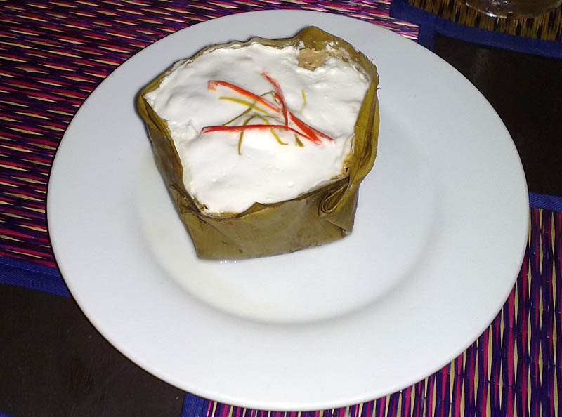

ម្ហូបខ្មែរ
អាម៉ុក ប្រហុក គ្រឿង — រសជាតិដែលចម្អិនដោយដៃ និងបេះដូង ពីមួយជំនាន់ទៅមួយជំនាន់។
អាម៉ុក
អាម៉ុក ជាម្ហូបដ៏ល្បីល្បាញបំផុតរបស់ខ្មែរ៖ ត្រីចំហុយជាមួយគ្រឿងក្រអូប ក្នុងស្លឹកចេក មានរសជាតិទន់ល្មើយ និងក្រអូបឈ្ងុយ។ វាជាម្ហូបដែលបង្ហាញពីភាពទន់ភ្លន់របស់ម្ហូបខ្មែរ — មិនហឹរខ្លាំង ប៉ុន្តែសម្បូររសជាតិ។
អាម៉ុក ត្រូវបានគេបម្រើក្នុងពិធីបុណ្យ និងពិធីមង្គលការ — ជាម្ហូបដែលនាំមនុស្សមករួមគ្នា។
ប្រហុក និងគ្រឿង
ប្រហុក — ត្រីដែលធ្វើឲ្យប្រៃ និងផ្អាប់ — ជា «ព្រលឹង» នៃម្ហូបខ្មែរ។ វាផ្តល់រសជាតិជ្រៅ និងអំបិលធម្មជាតិ ដល់ម្ហូបជាច្រើនមុខ។ គ្រឿង — ម្សៅគ្រឿងក្រអូបដែលផ្សំពីរមៀត ខ្ទឹម ស្លឹកក្រូចសើច និងគ្រឿងផ្សេងៗទៀត — ជាមូលដ្ឋាននៃគ្រប់មុខម្ហូបខ្មែរ។
រាល់គ្រួសារ មានរូបមន្តគ្រឿងរៀងៗខ្លួន — បន្តពីជីដូន ទៅម្តាយ ទៅកូន។
តុល្យភាពនៃរសជាតិ
ម្ហូបខ្មែរ ផ្អែកលើតុល្យភាពនៃរសជាតិទាំងបួន៖ ផ្អែម ជូរ ប្រៃ និងល្វីង — រួមជាមួយភាពស្រស់នៃបន្លែ និងផ្លែឈើត្រូពិច។ នំបញ្ចុក ជាម្ហូបអាហារពេលព្រឹកដ៏ល្បី — គុយទាវស្រស់ ជាមួយទឹកត្រីគ្រឿង និងបន្លែច្រើនមុខ។
ម្ហូបខ្មែរ ជាបេតិកភណ្ឌរស់ — ចម្អិនរាល់ថ្ងៃ នៅគ្រប់ផ្ទះ និងគ្រប់ភូមិ ទូទាំងប្រទេស។